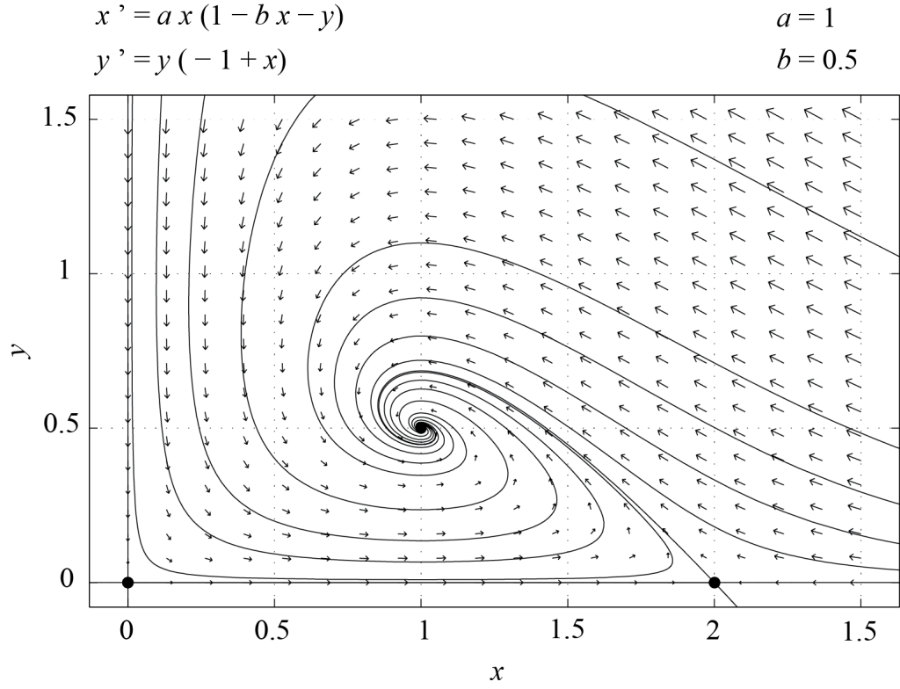

$latex \displaystyle \left\{\begin{align*} \displaystyle \frac{dF}{dt} &=F \left(\alpha - \beta F - \gamma S \right) \equiv g(F,S),\\ \displaystyle \frac{dS}{dt} &= S \left( - \kappa + \delta F \right) \equiv h(F,S), \end{align*}\right. \qquad (6.1)$
dengan parameter konstan $latex \alpha$, $latex \beta$, $latex \gamma$, $latex \kappa$, dan $latex \delta$ yang semuanya taknegatif. Model ini menyatakan bahwa ketika $latex S = 0,$ populasi mangsa berkembang menurut model logistik, sedangkan ketika $latex S \ne 0$, mangsa dimakan dengan laju yang sebanding dengan kelimpahan mangsa itu sendiri ($latex F$) maupun kelimpahan pemangsa ($latex S$). Pemangsa memiliki laju pertumbuhan (kelahiran dikurangi kematian) sebesar $latex -\kappa$ ketika $latex F=0$. Karena $latex \kappa$ positif, tanpa mangsa populasi pemangsa akan terdorong menuju kepunahan. Selanjutnya, laju pertumbuhan $latex S$ memuat suku interaksi bilinear $latex \delta\, F\, S$; dalam laju pertumbuhan per kapita pemangsa, kontribusi interaksi ini linear terhadap kelimpahan mangsa $latex F$. Jika $latex \beta = 0$, model ini disebut sistem Lotka–Volterra (lihat catatan kaki 1 dan 2 sebagai rujukan) dan merupakan model kontinu paling sederhana yang mencakup faktor-faktor dasar dalam interaksi antara pemangsa dan mangsanya. Model ini sebaiknya dipandang sebagai titik awal untuk model yang lebih rumit dan lebih realistis. Sisa bagian ini dikhususkan untuk menganalisis Persamaan (6.1).$latex \displaystyle \left\{\begin{align*} \displaystyle \frac{d f}{d \tau} & = a f (1 - b f - s),\\ \displaystyle \frac{d s}{d \tau} & = s (-1 + f), \end{align*}\right. \qquad (6.2)$
Di sini, parameter $latex a$ dan $latex b$ berhubungan dengan parameter semula melalui $latex \displaystyle a = \frac{\alpha}{\kappa}$, $latex \displaystyle b = \frac{\beta \kappa}{\alpha \delta},$ sehingga $latex a \gt 0$ dan $latex b \ge 0$.$latex \displaystyle P_0 = (0, 0), \qquad P_1 = \left(\frac{1}{b}, 0\right), \qquad P_2 = (1, 1 - b),$
dan semuanya terletak di kuadran pertama asalkan $latex 0 \lt b \le 1$; selanjutnya kita akan mengasumsikan syarat ini terpenuhi. Analisis kestabilan linear dapat digunakan untuk mendeskripsikan dinamika lokal (6.2) di sekitar titik-titik tetap tersebut. Matriks Jacobi (6.2) diberikan oleh$latex J(f,s) = \displaystyle \left(\begin{array}{cc} a (1 - 2 b f - s) & - a f \\ s & -1 + f \end{array} \right).$
Untuk $latex P_0$, $latex s = f = 0$ dan matriks Jacobi $latex J(0,0)$ berbentuk diagonal. Nilai-nilai eigennya adalah $latex a$ dan $latex -1$, dengan vektor eigen terkait berturut-turut $latex \displaystyle \left(\begin{array}{c}1 \\ 0 \end{array}\right)$ dan $latex \displaystyle \left(\begin{array}{c}0 \\ 1 \end{array}\right)$. Dengan demikian, titik asal merupakan titik pelana.
Untuk $latex P_1$, $latex f = 1/b$ dan $latex s = 0.$ Matriks Jacobi $latex J(1/b,0)$ berbentuk segitiga atas sehingga nilai-nilai eigennya merupakan entri-entri diagonalnya, yaitu $latex -a$ dan $latex -1+1/b$. Untuk $latex 0 \lt b \lt 1$, titik tetap ini juga merupakan titik pelana. Jika $latex b = 1$, maka $latex P_1 = P_2 = (1,0)$ dan titik tetap yang berimpit ini bersifat nonhiperbolik karena memiliki satu nilai eigen nol. Ruang eigen yang terkait dengan $latex -a$ direntang oleh $latex \displaystyle \left(\begin{array}{c}1 \\ 0 \end{array}\right)$, sedangkan ruang eigen yang terkait dengan $latex -1+1/b$ direntang oleh $latex \displaystyle \left(\begin{array}{c}1 \\ (-a b + b- 1)/a \end{array}\right)$.
Untuk $latex P_2$, $latex f = 1$ dan $latex s = 1 - b$. Matriks Jacobi $latex J(1,1 - b)$ adalah
$latex \displaystyle J(1, 1 - b) = \left(\begin{array}{cc} -a b & -a \\ 1 - b & 0 \end{array} \right),$
dan nilai-nilai eigennya, $latex \lambda_1$ dan $latex \lambda_2$, memenuhi
$latex \det(J) = \lambda_1 \lambda_2 = \det\left[J(1,1-b)\right] = a (1 - b) > 0,$
serta
$latex \hbox{Tr}(J) = \lambda_1 + \lambda_2 = \hbox{Tr}\left[J(1,1-b)\right] = - a b \lt 0.$
Karena itu, untuk $latex 0 \lt b \lt 1$, $latex P_2$ merupakan simpul stabil atau spiral stabil.
[caption id="attachment_49" align="alignnone" width="800"]
Gambar 6.1. Potret fase model (6.2) dengan a = 1 dan b = 0.5, diplot menggunakan perangkat lunak PPLANE. [Deskripsi Gambar][/caption]Analisis kestabilan linear di atas hanya membuktikan sifat lokal. Namun, dalam rentang parameter tersebut, suatu argumen global tambahan—yang memakai keterbatasan solusi, pengecualian orbit periodik, dan analisis himpunan batas—menunjukkan bahwa jika nilai awal $latex f$ dan $latex s$ positif, dinamika akan konvergen menuju titik tetap $latex P_2$; pada titik ini, kepadatan populasi hiu maupun ikan bernilai berhingga. Dengan kata lain, tidak teramati osilasi periodik. Gambar 6.1 menunjukkan potret fase sistem (6.2) untuk $latex a=1$ dan $latex b=0.5$, yang diperoleh dengan PPLANE. Dalam kasus ini, titik tetap $latex P_2$ merupakan spiral stabil.
Sebagai latihan, pembaca diminta mengerjakan kasus $latex b > 1$, ketika hanya dua titik tetap yang berada di kuadran pertama. Dalam kasus itu, $latex P_1$ merupakan simpul stabil dan semua kondisi awal dengan $latex f > 0$ dan $latex s > 0$ konvergen menuju $latex P_1$. Dalam situasi ini, hiu punah dan ikan telah mencapai daya dukung lingkungan tempat mereka hidup.
[caption id="attachment_50" align="alignnone" width="800"] Gambar 6.2. Potret fase model Lotka–Volterra (6.2) dengan a = 1 dan b = 0, diplot menggunakan perangkat lunak PPLANE. [Deskripsi Gambar][/caption]
Gambar 6.2. Potret fase model Lotka–Volterra (6.2) dengan a = 1 dan b = 0, diplot menggunakan perangkat lunak PPLANE. [Deskripsi Gambar][/caption]
Osilasi dapat diamati asalkan kita menetapkan $latex b = 0$. Ini memang syarat yang diperlukan agar $latex P_2$ menjadi pusat, karena Tr$latex (J(P_2)) = - a b$ dan $latex \det(J(P_2)) = a (1 - b)$. Menetapkan $latex b =0$ membuat jejak $latex J(P_2)$ bernilai nol, tetapi determinannya tetap positif. Dalam kasus ini, $latex P_1$ menghilang (sebenarnya bergeser ke tak hingga ketika $latex b$ mendekati nol), sehingga hanya tersisa dua titik tetap, $latex P_0 = (0, 0)$ dan $latex P_2 = (1, 1)$. Matriks Jacobi $latex J(1,1) = \left(\begin{array}{cc} 0 & -a \\ 1 & 0 \end{array} \right)$ memiliki nilai eigen $latex \pm i \sqrt a$, sehingga $latex P_2$ kini merupakan pusat linear, sebagaimana diperkirakan. Gambar 6.2 menunjukkan potret fase yang bersesuaian, dengan lintasan-lintasan tertutup di sekitar $latex P_2$. Kita dapat membuktikan keberadaan lintasan tertutup sebagai berikut. Setiap lintasan pada bidang fase memenuhi
$latex \displaystyle \frac{d f}{d s} = \frac{a f (1 - b f - s)}{s (-1 + f)}.$
Ketika $latex b = 0$, solusi implisit persamaan ini adalah
$latex \displaystyle \left(f \exp(-f) \right) \left(s \exp(-s)\right)^a = \zeta,$
dengan $latex \zeta$ sebagai konstanta positif untuk lintasan interior. Nilai nol hanya menghasilkan himpunan batas yang degenerat, bukan orbit tertutup interior. Mudah dilihat bahwa terdapat nilai-nilai $latex \zeta$ yang membuat persamaan ini mendefinisikan kurva tertutup di sekitar $latex P_2$. Memang, fungsi $latex x \exp(-x)$ bernilai nol di titik asal, mencapai maksimum sebesar $latex 1/e$ pada $latex x=1$, dan menuju nol ketika $latex x \rightarrow \infty$. Akibatnya, untuk nilai $latex s$ dan $latex a$ tertentu, dapat ditemukan suatu rentang nilai $latex \zeta$ sehingga persamaan $latex f \exp(-f) = \displaystyle \frac{\zeta}{\left( s \exp(-s) \right)^a}$ memiliki dua solusi, satu di setiap sisi $latex f = 1$. Penalaran serupa berlaku untuk penampang yang sejajar dengan sumbu $latex s$. Lintasan-lintasan tertutup ini ditelusuri berlawanan arah jarum jam di kuadran pertama bidang $latex (f,s)$ karena
$latex \displaystyle \frac{d f}{d \tau} = a f (1 - s) > 0 \Leftrightarrow s \lt 1 \text{ dan }\frac{d s}{d \tau} = s (-1 + f) > 0 \Leftrightarrow f > 1.$
Dengan demikian, model Lotka–Volterra memprediksi osilasi periodik populasi pemangsa dan mangsa.
Gagasan yang dikembangkan dalam bagian ini dapat digeneralisasi ke sistem yang lebih kompleks. Sebagai contoh, sebuah artikel tahun 2000 karya G.F. Fussmann et al. berjudul Melintasi Bifurkasi Hopf dalam Sistem Pemangsa–Mangsa Hidup menunjukkan bahwa prediksi model pemangsa–mangsa yang melibatkan faktor lingkungan serta fraksi reproduktif dan nonreproduktif suatu populasi sangat sesuai dengan hasil eksperimen.
Kini kita beralih ke masalah dua spesies yang bersaing memperebutkan sumber daya yang sama. Kita akan mengasumsikan bahwa tanpa kehadiran spesies lain, setiap spesies tumbuh mengikuti hukum logistik. Persaingan untuk memperoleh makanan membuat laju pertumbuhan setiap spesies dibatasi oleh keberadaan spesies lain. Sebagai hampiran pertama, efek ini bersifat linear. Jika $latex X$ dan $latex Y$ menyatakan kepadatan rata-rata masing-masing spesies, kita memperoleh
$latex \displaystyle \left\{\begin{align*} \displaystyle \frac{dX}{dt} & = X (\alpha - \beta X - \gamma Y), \\ \displaystyle \frac{dY}{dt} & = Y (\delta - \kappa Y - \zeta X), \end{align*}\right. \qquad (6.3)$
dengan $latex \alpha$, $latex \beta$, $latex \gamma$, $latex \delta$, $latex \kappa$, dan $latex \zeta$ merupakan parameter positif. Seperti pada model Lotka-Volterra, mula-mula kita menskalakan ulang persamaan-persamaan ini untuk mengurangi jumlah parameter bebas. Kemudian kita melakukan analisis bidang fase untuk mendeskripsikan dinamika kedua spesies yang bersaing.
Nilai karakteristik bagi $latex X$ dan $latex Y$ adalah $latex X_0 = \alpha/\beta$ dan $latex Y_0 = \delta / \kappa$. Salah satu waktu karakteristik, misalnya, adalah $latex t_0 = 1/\alpha$. Dengan demikian, kita dapat mendefinisikan besaran-besaran tak berdimensi sebagai
$latex \displaystyle x = \frac{X}{X_0}, \qquad y = \frac{Y}{Y_0}, \qquad \tau = \frac{t}{t_0},$
mensubstitusikan ungkapan-ungkapan ini ke dalam Persamaan (6.3), dan mencari sistem yang disederhanakan untuk variabel $latex x$ dan $latex y$. Kita memperoleh
$latex \displaystyle \left\{\begin{align*} \displaystyle \frac{dx}{d \tau} & = x\, (1 - x - a\, y),\\ \displaystyle \frac{dy}{d \tau} & = c\, y\, (1 - y - b\, x), \end{align*}\right. \qquad (6.4)$
dengan $latex \displaystyle a = \frac{\gamma \delta}{\alpha \kappa},$ $latex \displaystyle b = \frac{\zeta \alpha}{\beta \delta},$ dan $latex \displaystyle c = \frac{\delta}{\alpha}.$ Dengan demikian, kita memiliki model dengan tiga parameter. Hal ini memang dapat diduga karena pada awalnya kita memiliki sistem nonlinear dengan enam parameter dan dapat menskalakan ulang tiga variabel, yakni $latex t$, $latex X$, dan $latex Y$. Pertanyaan apakah model ini dirumuskan dengan baik secara biologis kita serahkan sebagai latihan, lalu kita langsung beralih ke analisis titik-titik tetap Persamaan (6.4).
$latex P_0 = (0,0), \quad P_1 = (1, 0), \quad P_2 = (0, 1), \quad P_3 = \displaystyle \left(\frac{1 - a}{1 - a b},\frac{1 - b}{1 - a b}\right).$
Titik tetap terakhir, $latex P_3$, terletak di kuadran pertama hanya jika $latex 1-a$, $latex 1 - b$, dan $latex 1 - a b$ semuanya bertanda sama, serta $latex a b \ne 1$. Selanjutnya, kita mengasumsikan bahwa syarat-syarat ini dipenuhi dan menggunakan $latex \epsilon = \pm 1$ untuk menyatakan tanda ketiga besaran tersebut, yaitu
$latex \epsilon = \text{sign}(1 - a) = \text{sign}(1 - b) = \text{sign}(1 - a b).$
Jacobian dari (6.4) adalah$latex J(x,y) = \displaystyle \left(\begin{array}{cc} 1 - 2 x - a y & - a x \\ - b \, c \, y & c (1 - 2 y - b x)\end{array} \right).$
Sekarang kita dapat menghitung nilai-nilai eigen $latex J(x,y)$ yang dievaluasi pada setiap titik tetap.Untuk $latex P_0,$ matriks $latex J(0,0)$ berbentuk diagonal dan nilai-nilai eigennya adalah $latex 1$ dan $latex c$. Karena keduanya positif, titik asal merupakan simpul tak stabil.
Untuk $latex P_1,$ matriks $latex J(1,0)$ berbentuk segitiga atas dan nilai-nilai eigennya adalah $latex -1$ dan $latex c (1-b)$. Jika $latex \epsilon = 1,$ maka $latex P_1$ merupakan titik pelana. Jika $latex \epsilon = -1$, titik tersebut merupakan simpul stabil.
Untuk $latex P_2,$ matriks $latex J(0,1)$ berbentuk segitiga bawah dan nilai-nilai eigennya adalah $latex 1 - a$ dan $latex -c$. Dengan demikian, $latex P_2$ merupakan titik pelana jika $latex \epsilon = 1$, dan simpul stabil jika $latex \epsilon = -1$.
Untuk $latex P_3$, Jacobiannya adalah
$latex \displaystyle J \left( \frac{1 - a}{1 - a b}, \frac{1 - b}{1 - a b} \right) = \displaystyle \frac{1}{1 - a b} \left(\begin{array}{cc} a-1 & a\, (a-1) \\ b\,c\,(b-1) & c\,(b-1)\end{array} \right).$
Karena jejaknya $latex T$ dan determinannya $latex D$ diberikan oleh
$latex \displaystyle T = \frac{1}{1 - a b} \left(a - 1 + c (b -1)\right), \quad D = \frac{(a - 1) c (b - 1)}{1 - a b},$
kita melihat bahwa $latex \text{sign}(T)=-1$ dan $latex \text{sign}(D)=\epsilon.$ Jika $latex \epsilon = -1$, $latex P_3$ merupakan titik pelana. Jika $latex \epsilon = 1$, $latex P_3$ merupakan simpul stabil. Memang, diskriminan polinom karakteristiknya adalah
$latex T^2-4D = \frac{[(a-1)-c(b-1)]^2+4abc(a-1)(b-1)}{(1-ab)^2},$
dan karena itu positif. Dengan demikian, kedua nilai eigennya riil.
Gambar 6.3 dan 6.4 masing-masing memperlihatkan potret fase sistem (6.4) untuk $latex \epsilon = 1$ dan $latex \epsilon = -1$.
[caption id="attachment_51" align="alignnone" width="800"] Gambar 6.3. Bidang fase sistem (6.4), dengan a = 0.5, b = 0.8, dan c = 1 (ε = 1), yang digambar menggunakan perangkat lunak PPLANE. [Deskripsi Gambar][/caption][caption id="attachment_52" align="alignnone" width="800"]
Gambar 6.3. Bidang fase sistem (6.4), dengan a = 0.5, b = 0.8, dan c = 1 (ε = 1), yang digambar menggunakan perangkat lunak PPLANE. [Deskripsi Gambar][/caption][caption id="attachment_52" align="alignnone" width="800"] Gambar 6.4. Bidang fase sistem (6.4), dengan a = 1.2, b = 2, dan c = 1 (ε = -1), yang digambar menggunakan perangkat lunak PPLANE. [Deskripsi Gambar][/caption]
Gambar 6.4. Bidang fase sistem (6.4), dengan a = 1.2, b = 2, dan c = 1 (ε = -1), yang digambar menggunakan perangkat lunak PPLANE. [Deskripsi Gambar][/caption]
Dari sudut pandang ekologi, kedua spesies hidup berdampingan jika $latex P_3$ stabil, yaitu jika $latex \epsilon = 1$. Jika tidak, untuk kondisi awal interior generik salah satu spesies akan punah akibat spesies lain karena titik tetap yang stabil ketika $latex \epsilon = -1$ hanyalah $latex P_1$ dan $latex P_2$, dan pada kedua titik tersebut salah satu populasi bernilai nol. Pengecualiannya ialah kondisi awal yang tepat berada pada manifold stabil titik pelana $latex P_3$; lintasan demikian menuju $latex P_3$ dan membentuk batas antara kedua daerah tarikan. Contoh sederhana ini memperlihatkan bagaimana hubungan antarparameter model dapat disimpulkan dari fakta biologis. Sebagai contoh, analisis di atas menunjukkan bahwa jika kedua spesies hidup berdampingan pada titik tetap interior positif yang stabil, maka $latex a \lt 1$ dan $latex b \lt 1,$ sehingga $latex a b \ne 1.$ Kasus $latex a = 1$ atau $latex b = 1$ berada pada batas, sehingga titik koeksistensi tidak lagi menjadi titik interior positif yang terisolasi; jika keduanya sama dengan 1 dan $latex a b = 1$, sistem tersebut degenerat.
Dalam bab ini, kita memperkenalkan dua model klasik dinamika populasi, yaitu sistem predator-mangsa dan sistem yang mendeskripsikan dua spesies yang bersaing memperebutkan sumber daya yang sama. Alat utama yang kita gunakan untuk menganalisis kedua model dua dimensi ini adalah analisis bidang fase. Kita hanya membahas model kontinu elementer, tetapi analog diskret maupun model yang lebih kompleks tentu saja juga dapat dipertimbangkan.
Dari sudut pandang biologis, penting untuk mengingat bahwa sistem predator-mangsa dapat memperlihatkan osilasi temporal. Osilasi tersebut biasanya muncul dari bifurkasi Hopf, sebagaimana dibahas, misalnya, dalam artikel Fussmann et al.[footnote]G.F. Fussmann, S.P. Ellner, K.W. Shertzer, N.G. Hairston Jr., Crossing the Hopf Bifurcation in a Live Predator-Prey System, Science 290, 1358-1360 (2000).[/footnote] (lihat soal-soal), dan bukan berkaitan dengan adanya orbit tertutup yang jumlahnya tak hingga seperti pada sistem Lotka-Volterra dengan $latex a = 1$ dan $latex b = 0$.
Untuk spesies yang bersaing, model sederhana yang disajikan dalam bagian ini menunjukkan bahwa kedua spesies hanya dapat hidup berdampingan jika $latex a$ dan $latex b$ dalam sistem (6.4) keduanya kurang dari satu. Jika tidak, salah satu spesies akan menyebabkan spesies lain punah.
$latex \displaystyle \left\{\begin{align*} \displaystyle \frac{dx}{dt} & = - x + 4 - x y,\\ \displaystyle \frac{dy}{dt} & = - x y + y + y^2, \end{align*}\right.$
dengan $latex x$ dan $latex y$ taknegatif.$latex \displaystyle \left\{\begin{align*} \displaystyle \frac{d X}{d t} & =- \alpha X + \beta,\\ \displaystyle \frac{d Y}{d t} & = \gamma X Y - \delta Y - \zeta Y^2, \end{align*}\right. \qquad \alpha, \beta, \gamma, \delta, \zeta > 0.$